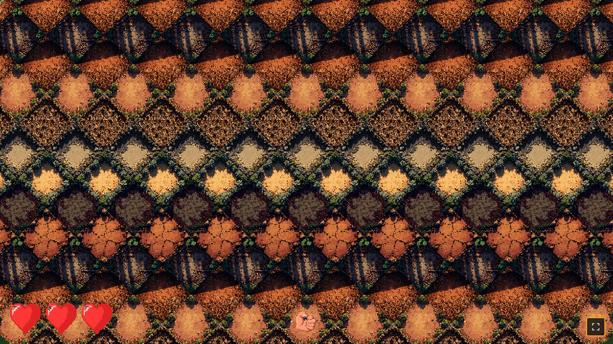
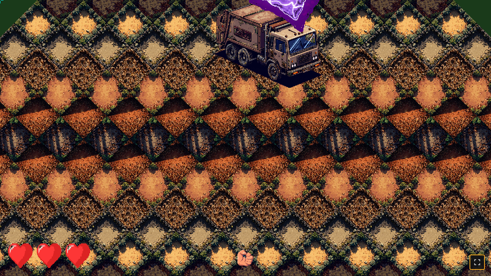
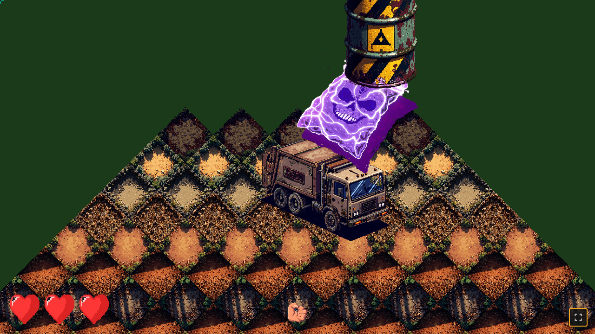
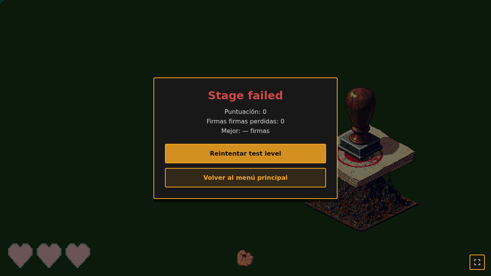
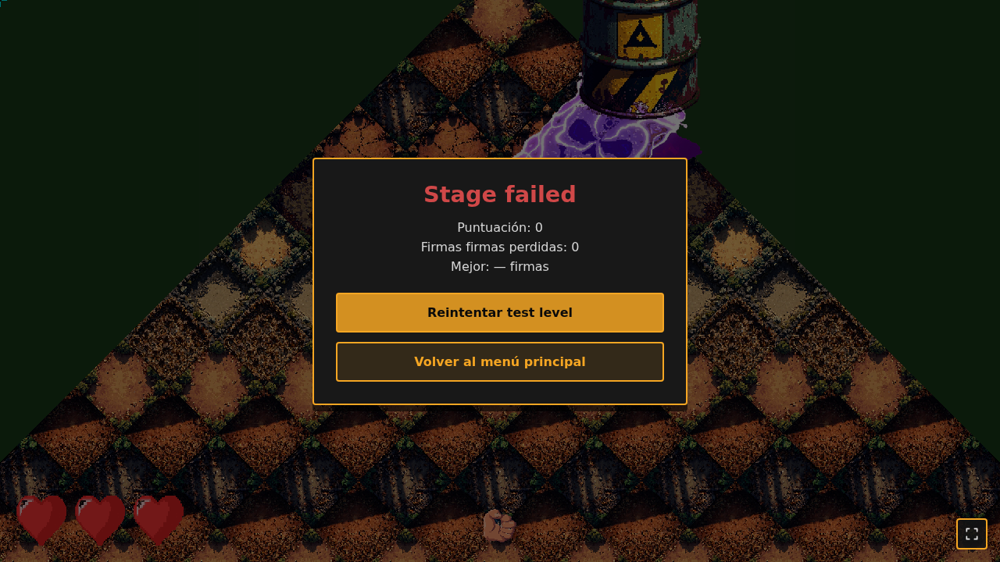

Punto de entrada único para revisar el estado del juego: capturas de gameplay
por commit, sprites del manifest, variantes de tiles, mini-demo interactivo
(tile-gallery.html)
y un tile test para validar una variante aislada en distintas
coordenadas iso. Las capturas se regeneran con Playwright headless tras cada
fix importante; las variantes de tiles y sprites vienen del manifest.
1) Capturas de gameplay (rail + cámara + HUD)
Tomadas con Playwright headless tras el fix F3.11 de dirección iso (high iso
sum = arriba en pantalla, contenido fluye DOWN al avanzar la
cámara — feel natural de "avanzando"). Rail NW→SE (iso 0,0 → 18,18) en 60 s.
t=0s — Boot1280×720 · camera iso (0, 0)

Observado:
Cámara en iso (0,0) — el origen del mundo aparece en el centro vertical.
Tile (0,0) y sus vecinos inmediatos renderizan en el viewport.
Sin enemigos visibles (ninguno en profundidad < 6 aún).
HUD: 3 corazones vivos, mano centrada abajo.
t=8s — Spawn window1280×720 · camera iso (2.4, 2.4)

Observado:
e01 (camión enemies_camion_treco) ya spawneó en t=0 y aparece ARRIBA del centro: está "ahead" de la cámara (depth 5 > depth 2.4) y con isoToScreen Y-flip se renderiza arriba.
e02 (bolsa_plastico) aparece a la derecha — Manhattan = 3, hittable.
Mano rotación hacia el cursor (derecha).
t=16s — Escape window1280×720 · camera iso (4.8, 4.8)

Observado:
e01 (camión) ahora visible CERCA del centro: la cámara se acercó a depth 5.
e01 escapará a t≈18.3s (Manhattan > 6) — integridad empezará a drenar.
El contenido fluye DOWN al avanzar la cámara — natural "avanzando".
t=58s — Rail end1280×720 · camera iso (17.4, 17.4)

Observado:
Cámara cerca de (17.4, 17.4) — el origen iso (0,0) ya está muy abajo en pantalla (rotó 17 tiles abajo).
e12 (sello_burocrático) está cerca del centro, listo para hit final.
Si integridad > 0 y todos hit → victory. Si integridad = 0 → game over (depende de cuántas escaparon).
Cursor a la derecha, mano apunta a la derecha1280×720 · t=15s

Observado:
Mano rotación hacia el cursor (derecha-arriba).
Boli apunta correctamente al cursor.
Tap dispara papeleta desde la mano hacia el target iso.
2) Tiles y sprites (mini-demo interactivo)
El catálogo interactivo completo de tiles (40 variantes × 3 alts = 120 PNGs) +
sprites (manos, enemigos, decoraciones) + mini-demo del bosque mediterráneo
con cámara orbital, bobbing, viento y patrullaje de enemigos está en:
Vista rápida de las 8 variantes activas de stage1-bosque (generadas con
minimax + postprocess_v4.py con NEAREST downsample 128→64 y chroma-key
magenta → alpha):
3) Tile test (validación de variante aislada)
Renderiza UNA variante de tile a una coordenada iso arbitraria con una cámara
controlada. Útil para verificar visualmente que una variante nueva (post-generación
minimax o postprocess) tessella con sus vecinas sin overlap ni gap, y para
comparar variantes lado a lado cambiando el offset iso.
Seleccioná una variante del dropdown (las 8 del stage activo).
Ajustá la cámara iso con X/Y para ver el tile desde distintos puntos de vista.
Cambiá gx/gy para reposicionar el tile aislado en el mundo iso.
"Llenar 5×5" pinta los 25 tiles alrededor de (gx,gy) usando el picker
checkerboard del manifest — sirve para ver el patrón repetido de una
variante junto a sus vecinas.
Si el tile tesella sin overlap ni gap con sus vecinos, el HUD muestra
step = tileSize/√2 ≈ 90.5 (a tileSize=128). Si ves gaps o solapes, el
problema está en la variante PNG o en el step math.
URLs de referencia
Test level (gameplay): http://100.116.137.66:8000/?test=1
Producción (main menu): http://100.116.137.66:8000/
Catálogo interactivo de tiles: tile-gallery.html